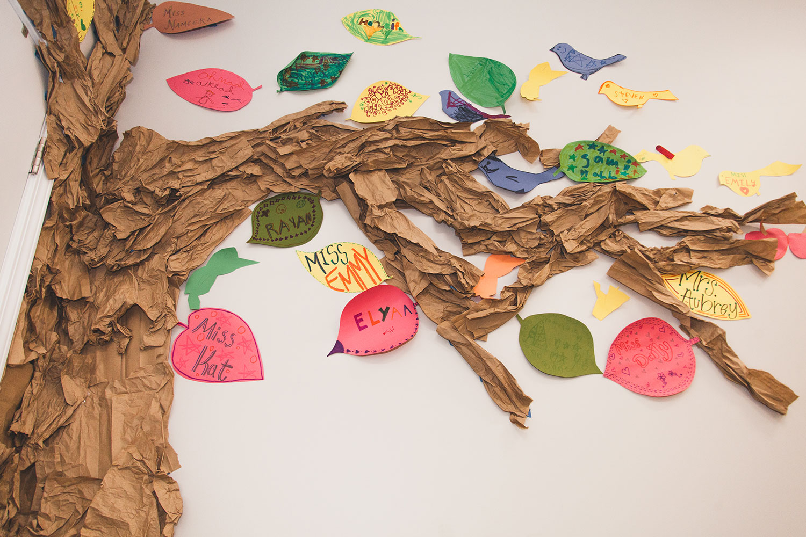

with
for


In Illinois, the Reproductive Health and Access Coalition went to work to protect reproductive choice.
The Reproductive Health and Access Coalition is comprised of health care providers, maternal and child health advocates, domestic violence service providers, youth and legal advocates. Uniting them is a “shared belief that reproductive rights are human rights,” says Brigid Leahy, Director of Government Relations for Planned Parenthood Illinois, a coalition member.
Chicago Foundation for Women participates in and supports members of the Reproductive Health and Access Coalition as part of our mission to improve women’s access to health services and information. CFW has invested more than $1.9 million in coalition members throughout its decade of organizing, including Planned Parenthood of Illinois, ACLU of Illinois, Illinois Caucus for Adolescent Health (ICAH) and Mujeres Latinas en Accion (Mujeres).
“We very quickly realized that with the court shifting there were a lot of things at risk that became urgent,” says Brigid.
“Although courts had blocked many of these dangerous provisions restricting abortion care that had been enacted over the years, these restrictions were at risk of returning if the Supreme Court were to overturn -- or even chip away -- at Roe v. Wade,” says Ameri Klafeta, the director of the Women's and Reproductive Rights Project of the ACLU of Illinois. “At a time when so many states are enacting harsh bans aimed at blocking all access to abortion care, Illinois has come together to confront this trend.”
The Reproductive Health Act (RHA) championed by the Coalition repealed the Illinois Abortion Law of 1975, removing anti-choice language and criminal penalties for providing abortion care from state law, affirmed abortion care as health care and established a fundamental right to reproductive health.
To pass the RHA, the coalition conducted statewide public outreach and education, culminating in a day of action at the state capitol.
CFW grantee Mujeres Latinas en Accion, which provides domestic violence and sexual assault services and empowers Latina women as advocates, brought together Mujeres-trained community organizers and promotoras (health educators) and Planned Parenthood of Illinois for a postcard campaign supporting the RHA and community conversations about reproductive health and choice. “Creating that open dialogue helped,” says Monica Paulson, Advocacy Manager at Mujeres. “There were people who initially didn’t want to support the bill but then in the end decided that it should be up to everyone to decide for themselves.” Many of them went on to advocate for the bill in Springfield.
Meanwhile, CFW grantee ICAH worked to create a more inclusive conversation, emphasizing the inclusion of youth and trans voices in converations about abortion access. “Young people need to be at the table all of the time,” says Alyssa Vera Ramos, Arts Justice Organizer and Artistic Director at ICAH.
Deborah, 16, traveled with ICAH to meet with legislators and advocate for the RHA. “Why shouldn’t youth be part of something just as much as adults?” Deborah asks. “What is there to lose by having youth voices present? You lose nothing but you can gain so much from our perspective.”
The Reproductive Health Act was signed into law by Governor J.B. Pritzker on June 12, 2019.
“All of the members of the coalition, everybody had a role to play,” says Brigid. “We all have our strengths."
“Every phone call, every legislator visit, every social media post came together to make the final victory possible,” adds Ameri. “Because of the shared commitment of so many -- each contributing in their own way, we have established reproductive health care as a fundamental right and cleaned up many of the antiquated requirements in Illinois law. Everyone who worked on this bill should be proud of their role in this effort.”
Growing up, I watched my mother struggle to keep food on the table, a roof over our heads. She found strength in the people around us, the women who encouraged her, and a community that wrapped around us as my mother went back to school to complete her education.
I see myself in the faces and the stories of the women and girls we impact at Chicago Foundation for Women.
I would bet you recognize pieces of your own family’s story in some aspect of CFW’s work. That is part of what makes CFW such a powerful community: giving rooted in the belief that the challenges facing women and girls affect all of us, and that each of us holds a piece of the solution; that by working together, we can build a healthy, safe and just Chicago region, for all of us.
CFW is here to bring together our individual contributions and direct them to where they can make the greatest impact. To do that, we rely on the input, expertise, and partnership of communities, coalition members and grantees working with us to make Chicago the best place in the country for women and girls.
Effective, responsive grantmaking starts and ends with community voice. CFW is here to listen, to learn, and to put resources and expertise to work for women and girls. Over the past year, the impact of CFW’s deep partnership with community has taken a number of forms: passing new legislation in response to fears about the future of choice; creating vehicles for inspired women to reinvest in their communities; making strategic investments based on the latest research; or iterating new programs to best meet the needs of the community.
We’ve seen, time and time again, that when the voices of women and girls are put front and center, and heard, there is no limit to what we can accomplish. This year, Chicago Foundation for Women made its largest-ever investments of more than $2.8 million in 117 organizations, impacting the lives of over 70,000 women, girls, trans, and gender nonconforming people in our region.
This impact is only made possible with the support of our donors, the partnership of our vendors, the trust of grantees, and with the leadership of women and our allies across our region. Together, we are building a stronger, more equitable Chicago region. For women. For girls. For all of us.
Thank you for being with us.
Let’s get to work,
Felicia Davis
President and CEO, Chicago Foundation for Women
The challenges facing Englewood are significant, but so is the opportunity
CFW assembled an alliance of eight organizations to create wraparound services - from job training to domestic violence services - to put 60 women on the path to economic security.
Across the country, reproductive choice is under attack. But thanks to a coalition of organizations funded in part by CFW, Illinois is ready.
When Supreme Court Justice Anthony Kennedy announced his retirement, a legal challenge to Roe v. Wade became a question of not if, but when.
With five leadership development programs, CFW brings together women from all walks of life to learn alongside and from one another how to build a more just, equitable Chicago region for all of us.
Communities know what they need to thrive.
The South Side Giving Circle is a group of women connecting need, knowledge, and resources to invest in Black women and girls on Chicago’s South Side.
Individually, our impact is limited. Together, the Giving Councils of CFW are pooling their resources to make meaningful investments in women and girls.
“We don’t often think of young people or young professionals as philanthropists,” says Adriana Viteri, co-chair of the Young Women’s Giving Council of Chicago Foundation for Women.
CFW is a community of donors committed to going the extra mile for women and girls.
When an office fire threatened to disrupt a grantee’s work supporting refugee resettlement, a group of donors rallied to keep the doors open.
CFW invests in community-led solutions to the most pressing challenges facing women and girls.
Investing in economic security, access to health, and freedom from violence for all women and girls, and in stronger communities, for all of us.
CFW invests with intention, for results.
We rely on the community, and in return, the community counts on us to invest for the greatest possible impact. To ensure our grantmaking is effective and efficient, CFW invests in building a strong and resilient nonprofit sector.
Our donors come from every walk of life and across the Chicago region.
Some give time, others talent, treasure or testimony. They share a commitment to equal opportunity and basic rights for women and girls, to investing in our communities, and they trust CFW to do it.
CFW strives to make every dollar count for equity, whether through our grantmaking or where we buy office supplies. This year, CFW is sharing a breakdown of our spending with women and minority-owned businesses.
For women and girls, by women and our allies.